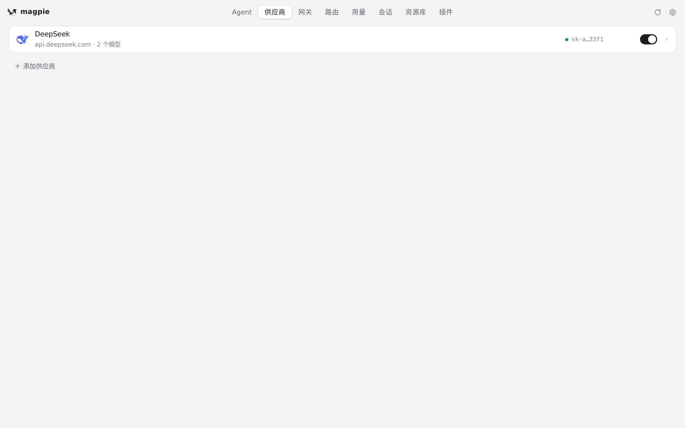
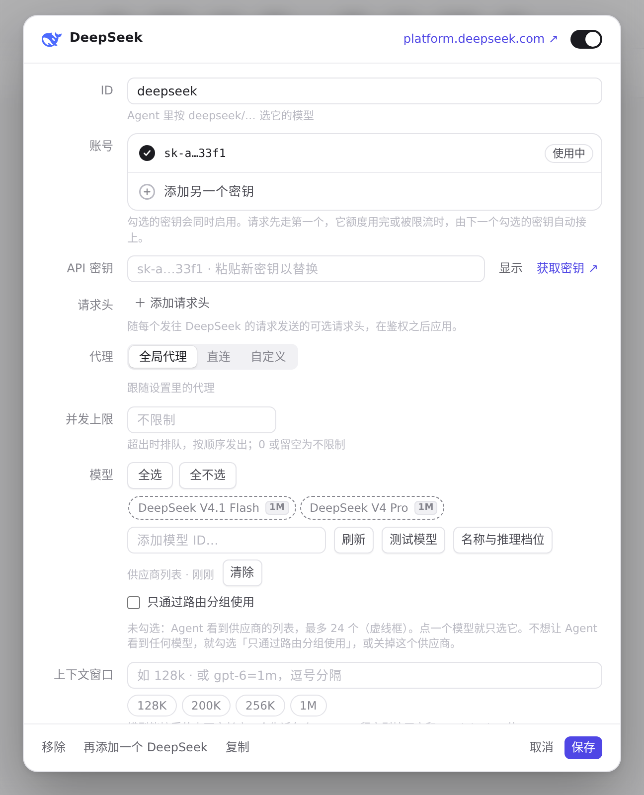

#760 界面预览
commit a009399 · 回到 PR · diff 让路由侧「按模型计数的用量窗口」（如某个模型的周窗口）也被标记为 capped 并带上 capsSome，前端据此在账号行显示新的「{模型名} 已达上限 · x 后恢复」提示与对应说明，另外新增了四条中文文案。
红线是鼠标走过的轨迹，红色圆环是一次点击；底部文字是这一步在做什么。空格暂停，← → 逐段查看。

账号行的用量上限提示在哪 · 供应商页：沙盒里唯一的供应商 DeepSeek，带一个 API Key

账号行的用量上限提示在哪 · 账号行：新的「{模型名} 已达上限」提示就出现在这一列账号里（本机没有订阅账号，看不到）